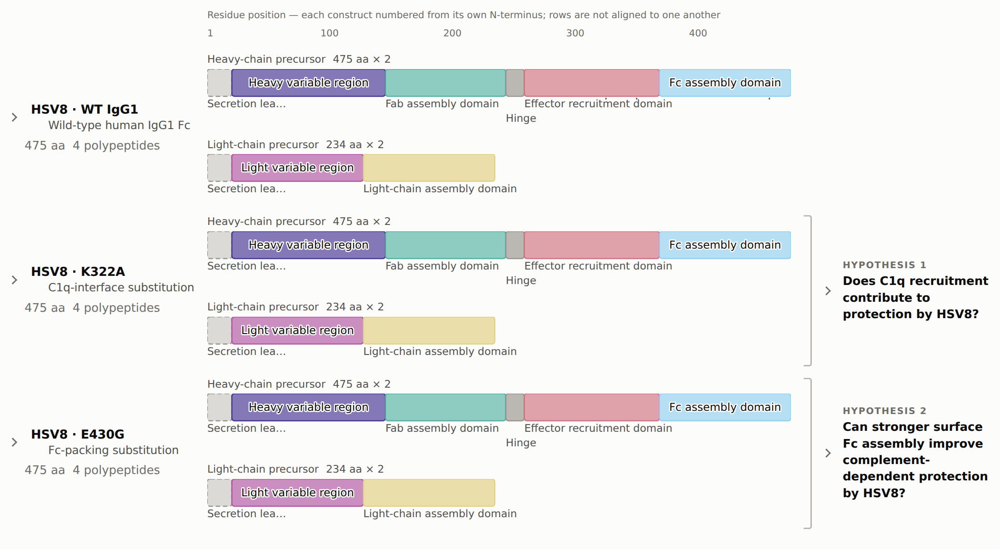
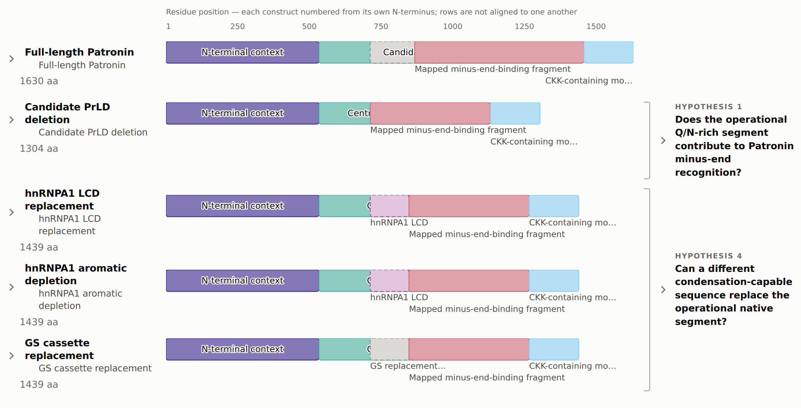

Worked example
ATP binding and hydrolysis in Hsp90 client maturation
A hydrolysis-defective Hsp90 keeps yeast alive, but a binding-defective one does not. What does a client protein need from ATP?
Design & visualize constructs
When designing a panel of protein constructs, we often turn to the literature for starting points and inspiration. A published mutant might separate two activities we want to study, while a construct from a related protein might suggest where to place a domain boundary.
LLMs are useful here because they can quickly read across papers with a specific design goal in mind. ChatGPT and Claude can already identify relevant constructs, compare what different groups measured, and suggest which variants would be informative to test together. Once we have a panel in hand, though, we want to see exactly how the constructs differ and inspect the evidence behind each change. For peptides, we also need a way to represent chemistry that a sequence alone can’t capture.
We built Construct Maps as a plugin for this workflow. Given a biological question, it proposes a panel of constructs and controls and explains what each comparison could tell us. An interactive map aligns the constructs on a shared residue scale so you can inspect a change, follow it to the source, and see whether the evidence comes from that construct, a related system, or a prediction. For peptides, the design record also specifies features such as D-amino acids, terminal caps, and cyclization.
A hydrolysis-defective Hsp90 keeps yeast alive, but a binding-defective one does not. What does a client protein need from ATP?
We gave each question below to the plugin in both GPT and Claude. Each case explains why we asked, shows what each model proposed, and compares the proposals with what a published paper later tested.
Which changes make a catalyst work better, and why.

Why do substitutions at P94 raise the activity of Staphylococcus aureus sortase A, and is the β7-β8 loop involved?
How the parts of an antibody shape what it does once bound.

Does complement engagement contribute to protection by antibodies against HSV-1 in neonatal mice, and does it do so across antibodies?
Short sequences, where one residue can decide the outcome.

Which residues of the proline-rich antimicrobial peptide Pdi1 drive its binding to the bacterial ribosome?
Regions with no fixed fold that still carry function.

Does the prion-like domain of Drosophila Patronin recognize microtubule minus ends through its primary sequence or through its capacity to condense?
Designed proteins that bind a target and can send it for removal.

How can a designed binder to human GPX4 be turned into a degrader that removes GPX4 rather than only binding it?